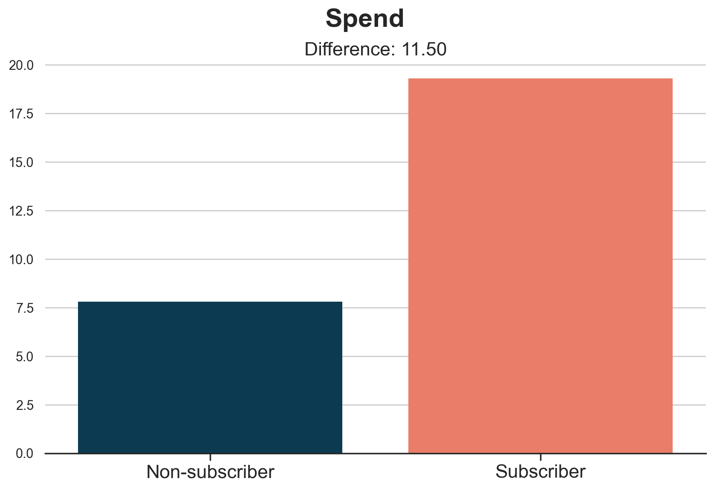
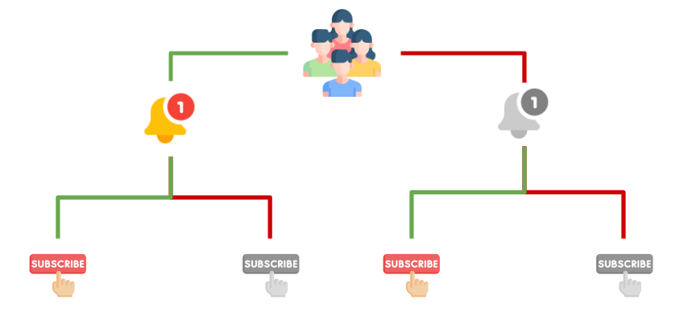
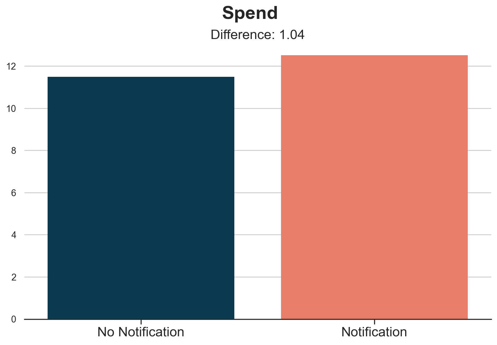
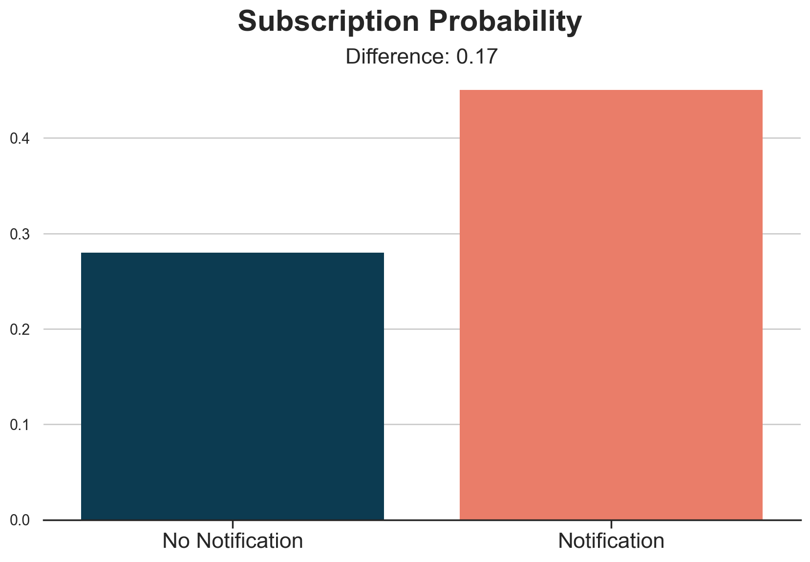
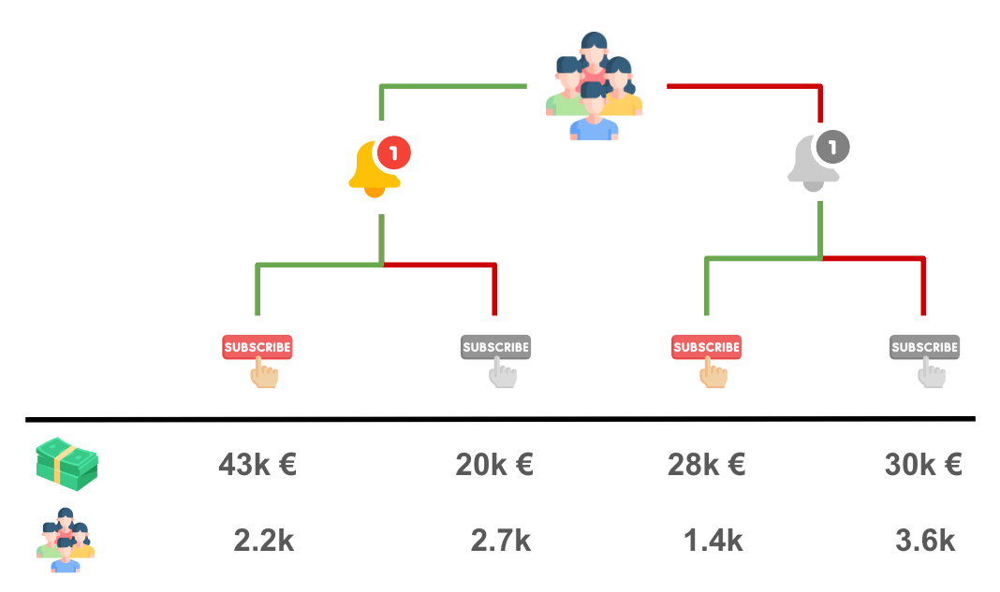
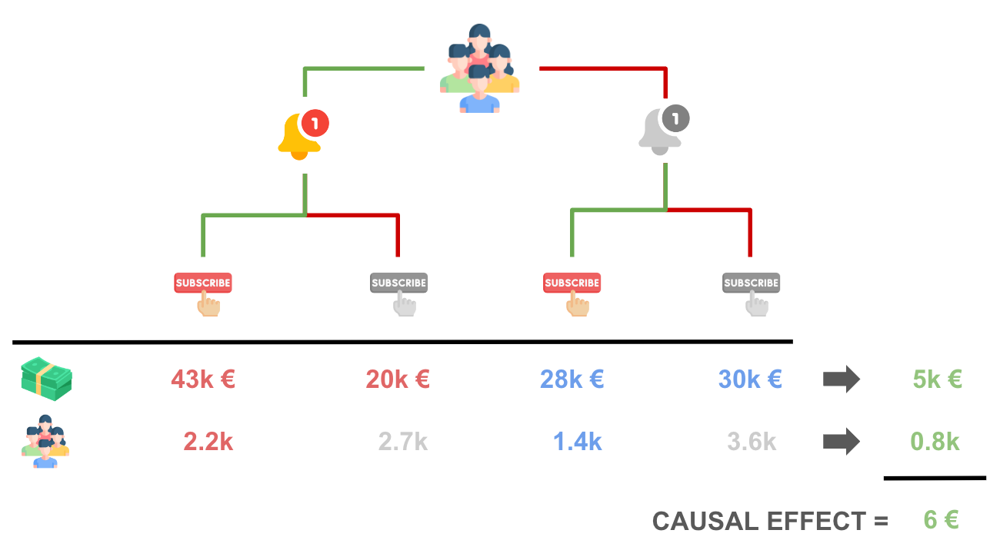
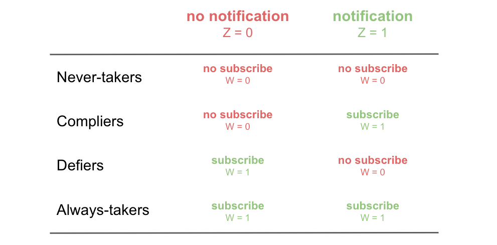

Instrumental Variables

How to estimate causal effects when you cannot randomize treatment.
A/B tests are the golden standard of causal inference because they allow us to make valid causal statements under minimal assumptions, thanks to randomization. In fact, by randomly assigning a treatment (a drug, ad, product, …), we are able to compare the outcome of interest (a disease, firm revenue, customer satisfaction, …) across subjects (patients, users, customers, …) and attribute the average difference in outcomes to the causal effect of the treatment.
However, in many settings, it is not possible to randomize the treatment, for either ethical, legal, or practical reasons. One common online setting is on-demand features, such as subscriptions or premium memberships. Other settings include features for which we cannot discriminate customers, like insurance contracts, or features that are so deeply hard-coded that an experiment might not be worth the effort. Can we still do valid causal inference in those settings?
The answer is yes, thanks to instrumental variables and the corresponding experimental design called encouragement design. In many of the settings mentioned above, we cannot randomly assign treatment, but we can encourage customers to take it. For example, we can offer a subscription discount or we can change the order in which options are presented. While customers retain the ultimate word on taking the treatment, we are still able to estimate a causal treatment effect. Let’s see how.
Evaluating Subscription Programs
In the rest of the article, we are going to use a toy example. Suppose we were a product company starting a weekly newsletter to promote product and feature updates. We would like to understand whether the newsletter is worth the effort and whether it is ultimately successful in increasing sales. Unfortunately, we cannot run a standard A/B test since we cannot force customers to subscribe to the newsletter. Does it mean we cannot evaluate the newsletter? Not exactly.
Let’s assume we have also run an A/B test on a new notification on our mobile app that promotes the newsletter. A random sample of our customers has received the notification, while a random sample has not. Perhaps this A/B test was not related to the evaluation of the causal effect of the newsletter at all, as it sometimes happens in large companies. However, this is a great opportunity for a data scientist interested in understanding the impact of the newsletter on sales.
Let’s first have a look at the data. I import the data-generating process from src.dgp and some plotting utilities from src.utils.
%matplotlib inline
%config InlineBackend.figure_format = 'retina'
from src.utils import *
from src.dgp import dgp_notification_newsletter
dgp = dgp_notification_newsletter(n=10_000)
df = dgp.generate_data()
df.head()
| spend_old | notification | subscription | spend | |
|---|---|---|---|---|
| 0 | 9.47 | 0 | 0 | 10.04 |
| 1 | 11.18 | 1 | 1 | 16.49 |
| 2 | 11.52 | 0 | 0 | 9.50 |
| 3 | 9.03 | 1 | 0 | 10.12 |
| 4 | 7.02 | 0 | 0 | 7.18 |
We have information on 10,000 customers, for whom we observe whether or not they received the notification, whether they subscribed to the newsletter, and how much they spent. Moreover, we also observe how much they spent before the introduction of the subscription program (spent_old). For the rest of the article, we will label these variables as follows:
notification, the treatment assignment, Zsubscription, the treatment status, Wspend_old, a feature or control variable, Xspend, the outcome, Y
A naive approach would be to compare the difference in spend between customers that subscribed and those who didn’t. The corresponding causal object or estimand is
$$ \tau_{W \to Y} = \mathbb{E} \Big[ \text{spend} \ \Big| \ \text{subscription} = 1 \Big] - \mathbb{E} \Big[ \text{spend} \ \Big| \ \text{subscription} = 0 \Big] $$
Let’s visualize the average spend for the two groups.
def plot_group_comparison(df, x, y, title, xticks):
fig, ax = plt.subplots()
g = sns.barplot(data=df.sort_values([y, x]), x=x, y=y, ci=None, ax=ax)
g.set(ylabel="", xlabel="")
ax.tick_params(axis='x', which='major', labelsize=16)
ax.set_xticklabels(xticks)
diff = df.loc[df[x]==1, y].mean() - df.loc[df[x]==0, y].mean()
plt.suptitle(title)
plt.title(f"Difference: {diff:.2f}", fontsize=16, fontweight=None, y=0.95)
plot_group_comparison(df, x="subscription", y="spend", title="Spend", xticks=["Non-subscriber", "Subscriber"])

Subscribers spend on average 11.5$ more than non-subscribers. But is it a causal effect?
We can imagine that customers who are more active and more interested in our product will also be more interested in hearing news about it. For example, we can imagine that customers who have more budget to spend will also want to spend it better and subscribe to the newsletter.
We can represent the relationship between the variables in the following Directed Acyclic Graph (DAG). If you never heard of DAGs, I recommend reading my introductory article first.
https://towardsdatascience.com/b63dc69e3d8c
In the plot, we represent variables with circles and causal relationships with arrows.
flowchart LR
classDef included fill:#DCDCDC,stroke:#000000,stroke-width:2px;
classDef excluded fill:#ffffff,stroke:#000000,stroke-width:2px;
classDef unobserved fill:#ffffff,stroke:#000000,stroke-width:2px,stroke-dasharray: 5 5;
U((U: budget))
W((W: subscription))
Y((Y: spend))
U --> W
U --> Y
W --> Y
class W,Y included;
class U unobserved;
linkStyle 0,1 stroke:#ff6e54,stroke-width:4px;
linkStyle 2 stroke:#003f5c,stroke-width:4px;
Technically speaking, customer’s budget is an unobservable confounder that opens a spurious path between our treatment, the subscription, and the outcome, customers’ spend. Because of this, we cannot interpret the difference-in-means estimate of 11.5$ as causal.
What can we do?
Encouragement Design
Unfortunately, we cannot run an A/B test because we cannot force people to subscribe to the newsletter. However, we can encourage people to subscribe. For example, we can send them a mobile notification to advertise the newsletter. This setting is called an encouragement design since we do not randomize the treatment, but the encouragement. The encouragement, the notification in our setting, is also called instrumental variable.
It’s important to stress that, while being randomly assigned, the encouragement does not correspond with the treatment of interest. In fact, some people will not subscribe despite receiving the notification, and some people will subscribe despite not receiving the notification.

After adding the encouragement, the notification, the data-generating process can be represented with the following DAG.
flowchart LR
classDef included fill:#DCDCDC,stroke:#000000,stroke-width:2px;
classDef excluded fill:#ffffff,stroke:#000000,stroke-width:2px;
classDef unobserved fill:#ffffff,stroke:#000000,stroke-width:2px,stroke-dasharray: 5 5;
U((U: budget))
Z((Z: notification))
W((W: subscription))
Y((Y: spend))
U -.-> W
U -.-> Y
Z --> W
W --> Y
class Z,W,Y included;
class U unobserved;
linkStyle 0,1 stroke-width:4px;
linkStyle 2 stroke:#003f5c,stroke-width:4px;
linkStyle 3 stroke:#2db88b,stroke-width:4px;
Note that now we have closed the open path between subscription and spend. Therefore, we can estimate the causal effect of the subscription on the probability of making a sale. Let’s see how.
First, we would like to understand whether the notification is effective or not. This is often referred to as strength of the instrument. Thanks to randomization, we can attribute the average difference in spend between people who received the notification and people who did not, to the treatment itself.
$$ \tau_{Z \to Y} = \mathbb{E} \Big[ \text{spend} \ | \ \text{notification} = 1 \Big] - \mathbb{E} \Big[ \text{spend} \ | \ \text{notification} = 0 \Big] $$
Let’s visualize the corresponding difference-in-means estimate.
plot_group_comparison(df, x="notification", y="spend", title="Spend", xticks=["No Notification", "Notification"])

It seems that customers who received the notification spend on average 1$ more than customers who didn’t receive it. This is a sensibly lower number than the 11.5$ we estimated before.
However, the effect of the notification on spend is not what we are interested in. We would rather know the effect of the subscription on spend. In fact, not all customers who receive the email subscribe to the newsletter. And vice-versa, some people subscribe to the newsletter even without the notification.
This means that the effect that we have just computed is diluted by the fact that some people do not comply with our incentive, the notification. We have to attribute it only to the customers who changed their minds because of the newsletter. How many are these customers?
Let’s compute the probability of subscription, by treatment group.
$$ \tau_{Z \to W} = \mathbb{E} \Big[ \text{subscription} \ | \ \text{notification} = 1 \Big] - \mathbb{E} \Big[ \text{subscription} \ | \ \text{notification} = 0 \Big] $$
plot_group_comparison(df, x="notification", y="subscription", title="Subscription Probability", xticks=["No Notification", "Notification"])

Customers that received the notification have a 17% higher subscription probability. In other words, it seems that the notification is able to make 17% of our customers change their minds. From the control group, we learned that 28% of them would have subscribed anyway, while we were unable to convince the remaining 55%.
We now have all the ingredients we need for our main analysis
Instrumental Variables (IV)
In this case, with a binary instrument, the notification, a binary treatment, the subscription decision, and a 50-50 treatment assignment probability, we can get a very simple intuition of how instrumental variables work.
We have four groups of customers, depending on whether they received the notification or not, and wether they subscribed or not.
df.groupby(["notification", "subscription"]).agg(spend=("spend", "sum"), customers=("spend", "count")).iloc[::-1].T.round(0)
| notification | 1 | 0 | ||
|---|---|---|---|---|
| subscription | 1 | 0 | 1 | 0 |
| spend | 42643.0 | 19958.0 | 27857.0 | 29566.0 |
| customers | 2253.0 | 2747.0 | 1400.0 | 3600.0 |
Let’s visualize the total spend and the total number of customers within each bucket.

Comparing treatment (notification) and control group, we see that the notification has generated an increase in spend of 5k€ (43 + 20 - 28 - 30). In order to recover the causal effect of interest, we just need to attribute the 5k€ incremental spend to the 800 (2200 - 1400) customers that decided to subscribe because of the notification. The result is exactly 5k€ / 800 = 6€ per customer!

More generally, the IV estimand is given by the ratio of two causal effects: the effect of the instrument (or encouragement, or assignment) Z, on the outcome Y, over the effect of the instrument Z on the treatment (or endogenous variable) W.
$$ \tau_{IV} = \frac{\tau_{Z \to Y}}{\tau_{Z \to W}} = \frac{\mathbb{E} \Big[ \text{spend} \ | \ \text{notification} = 1 \Big] - \mathbb{E} \Big[ \text{spend} \ | \ \text{notification} = 0 \Big]}{\mathbb{E} \Big[ \text{subscription} \ | \ \text{notification} = 1 \Big] - \mathbb{E} \Big[ \text{subscription} \ | \ \text{notification} = 0 \Big]} $$
To compute the IV estimate we replace the expected values with the empirical averages. In practice, in our case, we just divide the two difference-in-means estimates we computed in the plots in the previous section.
tau_ZY = df.loc[df.notification == 1, "spend"].mean() - df.loc[df.notification == 0, "spend"].mean()
tau_ZW = df.loc[df.notification == 1, "subscription"].mean() - df.loc[df.notification == 0, "subscription"].mean()
tau_ZY / tau_ZW
6.070222743259094
Our instrumental variable estimate of the effect of the subscription program on spend is 6$, as anticipated in the illustrations above! Note that the math in the illustration works only in the special case of an exact 50-50 assignment.
More generally, it can be shown that the formula of the IV estimator is given by a ratio of covariances,
$$ \tau_{IV} = \frac{\text{Cov} (Z, Y)}{\text{Cov} (Z, W)} $$
or, in matrix notation,
$$ \tau_{IV} = \mathbb{E} \big[ ZW \big]^{-1} \mathbb{E} \big[ ZY \big] $$
IV Extensions
What would happen if we had more instruments or other control variables? For example, we could have run other experiments to encourage customers to subscribe. Or, as in our case, we could have other variables that we can add to the model in order to increase prediction accuracy, such as previous spend levels, spend_old. How do we include them in the model?
The long-story-short is that when we have multiple instruments, the instrumental variable formula can be rewritten as
$$ \tau_{2SLS} = \mathbb{E} \big[ \hat{W} \hat{W} \big]^{-1} \mathbb{E} \big[ \hat{W} Y \big] $$
where $\hat{W}$ is the projection of W onto Z, i.e. in practice the predicted treatment status, given the treatment assignment. This prediction step is called the first stage. This formula should remind you of the OLS estimator formula. Indeed, this is equivalent to a linear regression of our outcome Y on the predicted treatment W, given the assignment Z. This step is called the second stage. Overall, since the estimation procedure can be split into two separate stages, this is referred to as the Two-Stage Least Squares (2SLS) Estimator.
The two-stage formulation particularly evident in the implementation of most IV packages, where we express the treatment as the result of a regression on the instrument. In the IV2SLS package this is done by using square brackets.
from linearmodels.iv.model import IV2SLS as iv
model_iv = iv.from_formula("spend ~ 1 + [subscription ~ notification]", data=df).fit()
model_iv.summary.tables[1]
| Parameter | Std. Err. | T-stat | P-value | Lower CI | Upper CI | |
|---|---|---|---|---|---|---|
| Intercept | 9.7849 | 0.2083 | 46.973 | 0.0000 | 9.3766 | 10.193 |
| subscription | 6.0702 | 0.5548 | 10.942 | 0.0000 | 4.9829 | 7.1575 |
We can verify that this is algebraically equivalent to first regressing subscription on notification and then regressing spend on the predicted subscription probability. Below we run the two regressions and report the estimates from the second stage.
model_1st_stage = smf.ols("subscription ~ 1 + notification", data=df).fit()
df["subscription_hat"] = model_1st_stage.predict(df)
model_2nd_stage = smf.ols("spend ~ 1 + subscription_hat", data=df).fit()
model_2nd_stage.summary().tables[1]
| coef | std err | t | P>|t| | [0.025 | 0.975] | |
|---|---|---|---|---|---|---|
| Intercept | 9.7849 | 0.298 | 32.823 | 0.000 | 9.201 | 10.369 |
| subscription_hat | 6.0702 | 0.795 | 7.639 | 0.000 | 4.512 | 7.628 |
The coefficients are indeed identical!
Lastly, the two-stage formulation above should also make the inclusion of additional covariates quite intuitive. We just add the covariates to both stages.
model_1st_stage = smf.ols("subscription ~ 1 + spend_old + notification", data=df).fit()
df["subscription_hat"] = model_1st_stage.predict(df)
model_2nd_stage_x = smf.ols("spend ~ 1 + spend_old + subscription_hat", data=df).fit()
model_2nd_stage_x.summary().tables[1]
| coef | std err | t | P>|t| | [0.025 | 0.975] | |
|---|---|---|---|---|---|---|
| Intercept | 0.3876 | 0.081 | 4.811 | 0.000 | 0.230 | 0.546 |
| spend_old | 0.9619 | 0.018 | 53.210 | 0.000 | 0.926 | 0.997 |
| subscription_hat | 5.9972 | 0.317 | 18.946 | 0.000 | 5.377 | 6.618 |
We can again verify that the estimated coefficients are identical.
model_iv = iv.from_formula("spend ~ 1 + spend_old + [subscription ~ notification]", data=df).fit()
model_iv.summary.tables[1]
| Parameter | Std. Err. | T-stat | P-value | Lower CI | Upper CI | |
|---|---|---|---|---|---|---|
| Intercept | 0.3876 | 0.0294 | 13.177 | 0.0000 | 0.3299 | 0.4452 |
| spend_old | 0.9619 | 0.0066 | 145.03 | 0.0000 | 0.9489 | 0.9749 |
| subscription | 5.9972 | 0.1161 | 51.652 | 0.0000 | 5.7696 | 6.2248 |
Including previous spend levels in the regression has indeed decreased the standard errors from 0.5 to 0.1.
The Limits of IV
The main limit of instrumental variables in an experimental setting, as analyzed in this article, is that they estimate a very “special” causal effect. As we have seen in the previous section, we have to re-scale the total effect by the number of customers who decided to subscribe because of the newsletter. This means that we can estimate the effect only for those customers who complied with our intervention. This set of customers is usually called compliers and the corresponding causal effect is called the Local Average Treatment Effect (LATE) or Compliers Average Causal Effect (CACE).
We are unfortunately unable to say anything about customers who subscribed to the newsletter even without the notification, called the always-takers, and those that we couldn’t convince with the notification, the never-takers.
Another limit of IV concerns its assumptions. In the last paragraph, we talked about three groups of customers, the compliers (our favorite one), always-takers, and never-takers. You might have noticed that this characterization implies the existence of a fourth group: the defiers. Those are the customers that would have subscribed to the newsletter if we had not received the notification. However, because of the notification, they changed their mind, defying the intent of the instrument.

In order to be able to draw causal conclusions, we have to assume that there are no defiers in the experiment, otherwise our re-scaling would be wrong and our estimates biased.
Another crucial assumption lurking in the background is what is usually called the exclusion restriction. In words, this assumption states that the instrument, the notification, only affects the outcome, spend, through the treatment, the subscription. A potential violation in our setting could be if the notification was waking up sleeping users. Imagine a customer who wanted to make a sale and already added items to the basket, but forgot to checkout. The subscription notification might remind the users to checkout and therefore directly impact spend. As you can imagine, the IV estimate would be biased because we are wrongly attributing some sales to the subscription, while they were a direct effect of the notification itself.
Conclusion
In this article, we have introduced instrumental variables in an experimental setting. When we cannot randomize the treatment because of ethical, legal or technical constraints, we might still consider randomizing an incentive to take up the treatment. This allows us to make causal statements, but only for a subset of the overall population, the compliers, i.e. the customers that comply with our incentive and take up the treatment because of the incentive.
It’s important to note that instrumental variables can be also used in observational settings. However, in that case, the exclusion restriction assumption that we mentioned in the previous section becomes harder to justify. In fact, we need a setting in which our instrument does not affect the outcome through any other channel besides the treatment. Technically, the exclusion restriction assumption is
$$ Y_i(W_i = w, Z_i = 1) = Y_i(W_i = w, Z_i = 0) \qquad \forall w, i $$
This assumption is harder to justify when we do not control the design of the encouragement assignment. However, if satisfied, it opens the door to causal inference in completely new settings.
References
-
Spotify (2023), Encouragement Designs and Instrumental Variables for A/B Testing
-
Goldsmith-Pinkham (2021), Instrumental Variables video lecture
-
Ding (2023), A First Course in Causal Inference notes
Related Articles
Code
You can find the original Jupyter Notebook here:
https://github.com/matteocourthoud/Blog-Posts/blob/main/notebooks/instrumental_variables.ipynb
I hold a PhD in economics from the University of Zurich. Now I work at the intersection of economics, data science and statistics. I regularly write about causal inference on Medium.